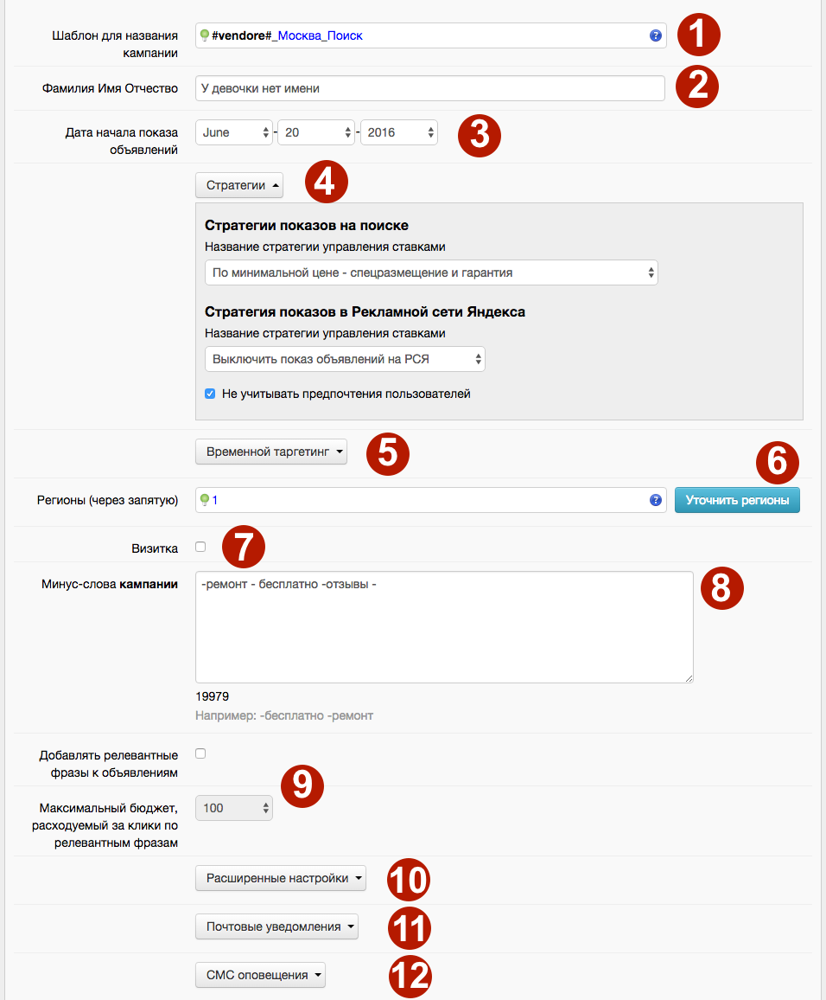
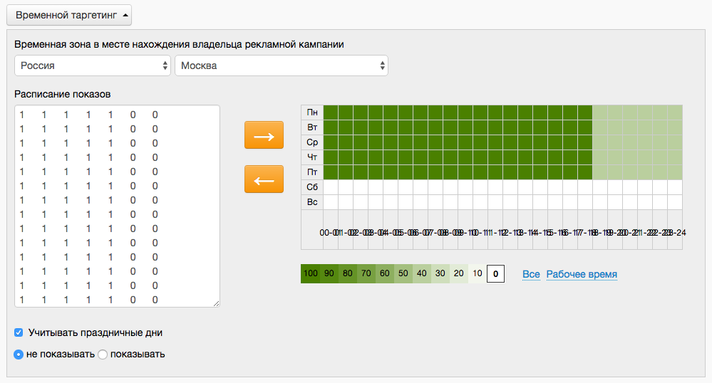

В данный момент сервисы К50:Генератор в процессе переезда на новый дизайн. Данная статья актуальна не для всех клиентов. Если вы не нашли ответ на свой вопрос, обратитесь к старой справке
Здесь в адаптированном интерфейсе Яндекс.Директ вы можете указать необходимые настройки рекламной кампании: регионы, стратегию показа, заполнить визитку и т.д. Все настройки идентичны настройкам в параметрах кампании Яндекс.Директ.

Поле "Шаблон для названия кампании" позволяет разделять одну кампанию в К50:Генератор на несколько кампаний в интерфейсе Яндекс.Директ.
Например, в К50:Генератор вы создаете кампанию для определенной id категории, но вы хотите, чтобы в интерфейсе директа данная кампания разделилась на несколько, в зависимости от тега vendore. В таком случае в это поле вы вписываете vendore.
Помимо тегов в данное поле можно вписывать и слова, и использовать те же функции, что и в рамках создания шаблонов объявлений и ключевых слов.
ФИО создателя кампании. Соответствует полю "Название клиента" в параметрах кампании Яндекс.Директ.
По умолчанию ставится текущая дата создания кампании. Соответствует полю "Название клиента" в параметрах кампании Яндекс.Директ.
Вы можете выбрать стратегию управления ставками. Настроить стратегию для показа на поиске или РСЯ.
Вы можете указать временной интервал, когда будут показываться все объявления вашей рекламной кампании (это называется временной таргетинг).
Подробнее про настройку временного таргетига ниже.
Вы можете указать единый регион/регионы показа для всех объявлений рекламной кампании.
Создание виртуальной визитки для всей кампании.
Вы можете указать единый регион/регионы показа для всех объявлений рекламной кампании. Соответствует полю "Единые минус-слова для всех фраз кампании" в параметрах кампании Яндекс.Директ.
Вы можете указать единый регион/регионы показа для всех объявлений рекламной кампании. Инструмент, который автоматически добавляет новые ключевые фразы в дополнение к тем, которые задал рекламодатель.
Если вы хотите добавить дополнительные релевантные фразы в вашу кампанию, установить галочку и выставьте максимальный % от бюджета, который вы готовы на них тратить.
Позволяет задавать настройки таких полей как:
- Доменные имена, на которых не нужно показывать объявления;
- IP, на которых не показывать объявления;
- Автофокус - автоматическое уточнение фраз;
- Рассчитывать цены позиций показа без учета ставок в остановленных объявлениях конкурентов;
- Останавливать показы при недоступности сайта;
- Дополнительные счетчики Метрики;
- Добавление в ссылку метку yclid;
- Разметку OpenStat для Яндекс.Метрики;
- Настройка цен на мобильных устройствах.
Позволяет задавать настройки таких полей как:
- E-mail для уведомлений;
- Минимальный баланс, при уменьшении до которого отправляется уведомление;
- Предупреждения о смене позиции.
Настройки СМС оповещений и их периодичности.
Временной таргетинг

При настройке расписания показов можно указать подходящий часовой пояс. По умолчанию указано московское время. Для одной кампании можно выбрать только один часовой пояс. Для выбора доступны часовые пояса, которые отличаются от времени по Гринвичу только на целое число часов.
Как выбрать время показа объявлений
- В правой таблице с расписанием выберите график показа объявлений
- Нажмите на стрелочку влево, расписание будет перенесено в левую таблицу
- Сохраните